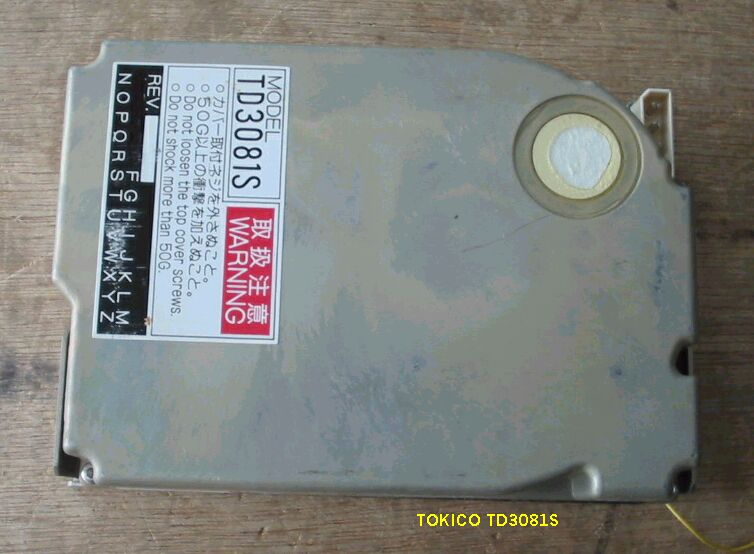

ハードディスク遊びのページ
ここでは、私がパソコンのハードディスクで遊んでいる様子を紹介します。
前書き
ハードディスク、磁気ディスク装置のことですが、私が初めて出会ったのは、以前つと
めていた会社で、あるシステム開発を担当させられたときのことです。その汎用中型マシンに は、ディスクパックと呼ばれる、洗濯機くらいの大きさの装置が付いており、上部は半透明の
プラスチックのふたが付いていて、そのふたを開けると、30cmくらいの磁気ディスクが 何枚か重ねたものが着脱できるようになっていました。容量は5MBです。このディスクを
取り付けることが、マウントで、外すことがアンマウントと呼ばれる操作です。マウント （mount）乗せる、という言い方はここからきているのが実感できますね。
次に出会ったのは、パソコンのハードディスクで、AppleのLC575に入っていた、160MBの 3.5インチHDです。遅い、容量が足りないということで、Quantum-Fire-Ball1280MBに交換
しました。1997年で、たしか３万円以上したと思います。それ以降単なる電子部品でなく、 回転する、動作音のあるハードディスクに興味を惹かれ、必要以上に買い集めたりして、
今では100個以上たまってしまいました。
遊びの対象となるハードディスクの条件
a.箱に入っていたり、説明書が付いていたりしないこと。
b.よくわからない、動かしてみると、面白そうなもの。
c.値段が安いこと、できれば千円以下。
その１ SCSIハードディスク （変換コネクタについて）
以前、MACのハードディスクはSCSIがほとんどで、私もMACで使える手頃な（特に値段が）SCSIHDを探していました。ワークステーションで使われていたらしい数ＧＢの、当時としてはかなり大容量のSCSIを見付けてのですが、コネクタの形状がMACで使われている50pinのものでなく、68pinのワイドSCSIでもなくて、買うのを躊躇していました。そのことが残念で、次に秋葉原へ行ったときに、４千円で500MHの変なコネクタのHDを買ってしまいました。そのコネクタの形状を頭に焼き付けて、ラジオデパートのパーツやさんの店先を丹念に調べると、ある店に80pin→50pinの変換コネクタがありました。ターミネータ付きで４千円位、ターミネータなしで３千円位もし、ジャンクのHD自体と同じくらいの値段に驚きながらも、それぞれ１個ずつ購入しました。家に帰って、早速、変なコネクタのSCSIHDをMACにつなぎ、フォーマッタを起動してみると、sunxxxという表示が出てきましたので、そのHDは、SUNのワークステーションで使用されていたものとわかりました。MACフォーマットは問題なく終わり、7100/80AVの中に収まりました。後日、そのコネクタはSCAと呼ばれるもので、ワークステーションでは、標準的に使用されているらしいことがわかりました。その後、SCAコネクタの中古HDが大量に出回るようになり、あちこちで変換コネクタが、安く出回るようになりました。80pin→68pinのワイド用のものもあります。また、ワイド→ナロー変換もあります。私の購入したワイド→ナロー変換コネクタは、配線が不完全らしく、使用できませんでした。別のメーカーのものを使って、HDが悪いのではなく、変換コネクタが悪いことが判明し、捨てようとした、ワイドSCSIが２個、使えることがわかって、なにか得をしたような感じです。そのほかに、2.5インチ→3.5インチの変換コネクタも持っていますが、2.5インチのSCSIHD自体が珍しくなってしまったので、秋葉原でも見かけることは希になりました。
その２ SCSI2.5インチハードディスク
昔のノート型MAC、パワーブックでは、SCSI-HDが使われていました。ジャンクのパワーブックでは、HD
が壊れていることが多く（もちろん電池もだめです）、2.5インチのSCSI-HDを探すことになりました。 MAC専門店に行けば、補修用で純正SCSI-HDが置いてありましたので、簡単に手にはいるのですが、値段がジャンクの本体の何倍もするので、あまりにもばかばかしい。それで見付けたのが、写真にあるような、かなり変なHDです。左側の、変換コネクタが付いたのが、富士電機製の40MB-SCSI-HDで、箱入り新品で千円でした。変換コネクタをつけて、3.5インチに変換し、デスクトップ型のMACでフォーマットし、システムをインストールします。富士電機ではかっては、3.5インチのSCSI-HDも生産しており、これもジャンクで手に入れた、ICM製の外付けHDに入っていましたが、SCSI端子のピン数が50ではなく、３８ピンと、半端な数で困ったことがあります。
右側は、JVC製の20MB-SCSI-HDです。１個600円のジャンク品で、３個中１個だけ生きていました。
その３ 使えないＨＤ
たくさんのジャンクＨＤをいじっていると、使えないＨＤに頻繁に出会います。その内訳は、
a.明らかに壊れている。
ロジック基盤が焦げている。ロジック基盤上の部品が破損、脱落している。ケースに穴があいている。配線が切れている（故意に切断してある）。これは、実際に私が体験したもので、よく目を開けてみれば、出会うことはなかったものです。配線が故意に切断されたＨＤはQuantum製のワークステーション用のもので、「直せるものなら直して見ろ」とでも言うように、大量に段ボールに入れて置いてあったので、やる気を出して買ってしまったのですが、ついに１個も再生できませんでした。
b.モーターが回らない。
外見は全く正常でも、ウントもスンとも言わない。これはだめですね。捨てましょう。
c.コネクタの形状などインターフェイスが合わない。
ICM製の38ピンコネクタが最初で、次にSCAコネクタでした。SCAは普通になってきたので、変換コネクタを付けて、MACやDOS/Vで使っています。ただし、LVDなどディファレンシャル型は、対応するSCSAカードがなければ使えないし、カードが高価なので、未チェックでそのまま保管されているSCSIが何個かあります。
d.設定がわからない。
IDE-HDはあまり複雑ではないので、試行錯誤を繰り返せば分かってしまいます。SCSIは少し難しくなりますが、メーカのWEBサイトから、見付けることができる場合があります。国内のメーカでは、古いデータは無いことがあります。ジャンクパーツ設定全書（Scott
Muueller著、ソフトバンク）にお世話になることがあります。困るのは、設定が狂ってしまったHDで、SCSI-IDのジャンパーを全部オープンにしても、IDが２になってしまい、そのほかは正常というのがありました。
e.特定のシステムで認識しない。
SCSIはWindows、MAC、PC98であまり差がないのですが、IDEではDOSでFDISK、FORMATがうまく行かないHDが、MACのフォーマッタで使えるようになることがあります。Linuxで使った後、WindowsがインストールできなくなったHDをMACで復活させて使ったことが何度かあります。
f.エラーがある。
わずかのBAD-SECTORは差し支えありませんが、BAD-SECTORがたくさんあって、フォーマットに時間がかかるようなHDは、早く捨てた方が身のためです。調子の悪いHDのフォーマットほど、時間を浪費するものはありません。
g.音がうるさい。
古いBARRACUDAなどで、かなりうるさいものがあります。パソコンには不向きです。常時使用するのは耳に悪いので、放熱と、防音効果のよいケースに入れて、バックアップ用などに使いましょう。
h.消費電力が大きい。
電源の小さいパソコンでは、起動時に渋滞する事があります。MACのLCⅢにALPSの500MB-SCSIを入れたところ、時々起動しなくなりました。古くて遅い、消費電力の大きいHDは、バックアップ用にまわしましょう。
その３ ＨＤの修理
ハードディスクは、よほどのことがないと、修理することは考えられません。Quantum製の配線が、
故意に切断されたHD、のところで書いたように、修復はほとんどの場合不可能です。それでも、今までで、修復できたケースが２件あります。
その１件目は、３個の怪しげなSISI-HD（Seagate ST51080）を購入したことがあり、３個とも不良でした。そこで、トルクスドライバで、ロジック基盤と機構部に分解し、組み合わせを換えて試してみると、１個が再生できました。コスト的には見合いませんが、たまに動くことがあるので、安い物を買うなら、同じ型のものをまとめて何個か、にするのも一つの考えです。
その２件目は、Performaに入っていた、Quantumの840ATです。久しぶりに火を入れたら、？マークが出て、HDがおかしいようです。再フォーマットしようかと試みたのですが、I/Oエラーになりだめです。HDを取り外しよく見ると、電解コンデンサ22v16マイクロのうち１個と、その付近の基盤が汚れていました。テスターで当たってみると、電解コンデンサ特有の、充電されるに従って抵抗値が上昇することがなく、3Kオームくらいです。電解コンデンサの不良と思われるので、別のジャンク基盤から外した、一回り耐圧、容量の大きいコンデンサと交換し、Performa6210につないでみると、何事もなかったかのように、立ち上がりました。あまりにも簡単に直ってしまったので、びっくりするくらいです。(2002/3/10記)
その4 最近の秋葉原でのジャンクＨＤの状況
月に１度くらい、秋葉原を徘徊する機会があります。目的の物を買い終えて、時間とお金と体力が
残っていると、大通りからはずれたパソコンジャンク街を見て回りますが、土日には露天商などもあってなかなか面白いものです。現在のジャンクHDの相場は、一応チェック済みのもので、1GB当たり千円というところで、安くなったものです。今回買ってきたのは、富士通製のMPD3052ATUという5GBのもので、単価千円、保証なし、未チェックというもの３個です。１個は全く問題なし、もう１個は2.8MBの不良セクターがあり、残りの１個は全くだめでした。勝率50%というところでしょうか。(2002/4/16記)
その5 ちょっと変わった３．５インチSCSI-HD
下の写真にあるSeagateのST5180Nですが、1.08GB、FastSCSI-2、5400rpmで古いMACで使うのにちょうどいいサイズです。そのサイズというのは、記憶容量のことだけではなく、寸法つまり機械的な大きさなのですが、普通の３．５インチHDは縦横高さが、145mmx102mmx25mm
くらいで、このST5180Nは一回り小さく、127mmx102mmx19mmなのです。他に、ST5660Nという 545MBのものもあります。ピザボックス型や一体型のMACで、スペース的に苦しいときに、役に立ちます。容量の小さいのは我慢しましょう。私がこれを使ったのは、LC475をSPARC station IPXに組み込んだときで、普通のHDでは縦方向が長く、どうしてもふたが閉まらなくなりましたが、ST5660Nに変更して、きちんと閉まるようになりました。
購入価格は、540MBのST5660Nが＠５４０円、1.08GBのST5180Nが＠９９９円で、いずれも未使用の新品（ただし保証なし）でした。(2002/5/16記)

その６ LVD Model SCSI-HD
最近、LVDインターフェイスのHDをよく見かけるようになりました。今手元に、80pinのSCAコネクタが付いたST34573LC
という、Seagate製の4.55GB、7200rpmのSCSI-HDがあります。この型名の最後のLCがLVD（Low
Volt Dfferential）を意味しており、あいにく私は、LVDに対応したSCSI-HOSTアダプタを持っていません。それに、古いMacで使いたいので、Single
End で使えるかどうか、試してみることにしました。HDに印刷してあるジャンパー設定を見ると、Force Single
Ended というのがあり、ここにジャンパーをして、Macに外付けして見ると、フォーマッタから認識でき、全く問題なく使えます。下位互換性を持たせてあるんですね。その後、Seagateのホームページで調べてみると、別にジャンパーなどしなくても、SCSI-HOSTアダプタがSingle
Endだと、自動的にSingle Endになると書いてありました。今まで、型名の最後がLCというHDは、敬遠していましたが、これからは選択肢が多くなりますね。(2002/5/23記)
その7 ジャンクＨＤ Fujutsu MHM2200AT
今回買ってきたのは、写真の富士通製MHM2200ATという、2.5インチ20GBのもので、ジャンク扱い＠千円、
３個です。TESTは、2.5インチ→３．５インチ変換コネクタを使用し、自作のBaby-AT機から、Windows98
のMS-DOSプロンプトで行いました。１個は全く問題なし、もう１個は2.3MBの不良セクターがあり、 残りの１個は不良セクタが多く、いつまで待ってもフォーマットが終わらないのであきらめ。千円で20GB
ですから、１個でもまともなものがあれば、勝というところでしょうか。(2002/07/06記)
その8 ジャンクＨＤ Fujutsu MPA3026AT
久しぶりに、ハードディスク遊びということで、富士通の3GBを、500円でゲット。 容量、価格ともあまり面白くはないが、荷物が重くならないと、家に帰れないから
しかたがない。Windowsマシンでチェックしてみると、容量が、何と428MBになっている。 こういう場合は、MACとか98のような、別な機種を使うに限る。というわけで、MACに接続し
、外付けのSCSIから、OS7.6.1を立ち上げ、HDTでフォーマットを 試みた。あっという間にフォーマットは終了し、MAC用の3GBHDができあがった。
(20020/9/01記)
その9 ジャンクＨＤ Fujutsu M1638TAU
これは、前の続き。富士通製2.5GB２個を＠500円で購入。DOSのFDISKでは、
容量が436MBとなっており、正常に表示されない。MACでフォーマットし、２個とも 2.5GBとなった。 (2002/09/01記)
その10 ジャンクＨＤ Quamtum FireBall 3200AT
これは、BOOTできないと書かれて、100円で売られていた。他にも動きません と書かれた物が大量にあった。これは、DOSで、42MBになってしまっていたので、
MACで3GBに復活させてやった。 (2002/09/01記)
その11 ジャンクMO mitubishi MK640F5
640MBの外付けMOが、980円で有ったので、調子の悪い230MBと交換しようと思い、
２台買ってきた。１台は入り口のシャッターの具合が悪かったが、別に何の 異常も無く２台とも動作した。メーカのホームページを見ると、この機種は
すでに保守打ち切りとなっていた。私の所では、バックアップはもっぱらMOか、 HDでやっているが、これで当分CD-Rとか、CD-R/Wなどを、買わなくてもすみそうだ。
これは、ハードディスクの話ではないが、私はMOが好きなので、ハードディスク 遊びに加えることにした。今までに、動かなかったとか、壊れていたMOも何台か
買ってしまったことがあり、今回のように、まともなのは初めてだ。
(2002/09/01記)
その12 SEAGATE製ジャンクAT-HD(２００２年９月分)
９月下旬の土曜日、秋葉原のあぷらいど系数店で、SEAGATEまたはQUANTUM製の
、動きませんと表示されたHDが、@1000で大量に売られていた。SEAGATEの20GBと 15GBを１個ずつ購入したが、15GBが使用可能品だった。SEAGATEの透明なプラスチック
ケースに入っていて、不良の分類が、AとかEとか書いてあり、それを見て悩んでいた 方もおられたようだ。私の購入したのは、いずれも不良分類 E だったが、１個
（ST320423A）が完全にだめで、もう１個は完全にOKだった。ほかに13GBが大量に有ったが、 １１月２日に行ったときには、近くの店でフォーマット済みになり、@5000で売られていた。
（2002/11/06記）
その13 ジャンクWIDESCSI-HD（２００２年１１月分）
今回はSCSIです。問題有りのWIDEあるいはSCA-HDを６個、計\2330で購入。MACでチェック
すると、見えないと書いてあった、IBM-DDRS-39130-9GBがHDTで認識でき、フォーマット できた。もう１個のDDRS-39130もOK。QUATUM-VIKING2-9GBがOK。だめだったのは、Fujitsu
-MAB3091SP、SEAGATE-ST39102LC、QUANTUM-VIKING2-4.5Lの３個。勝率1/2。なぜMAC
でチェックするかというと、使い慣れたHDフォーマッタが、何種類もインストールして有 るからで、また、SCSIはMACで使うことが多いからでもあります。以前はDrive7を多く
使っていましたが、時間がかかるので、いまはHDTにたよることが多くなっています。 唯一の国産ソフトである、Be'sCrewも時には役に立ちます。Drive7付属のMountCacheは、
起動後に、MOをマウントしたりするのに重宝しています。 （2002/11/06記）
SEAGATE-ST39102LCが大騒音とともに動作
捨てる前にもう一度チェックというので、ＭＡＣ（パイオニアのMPC-GX1）につないで
Drive7を起動してみると、ST39102LCを認識している。早速フォーマット。このフォーマッタ には、クイックフォーマットとローレベルフォーマットの区別はなく、時間がかかる。
昔の100MBくらいのHDならまったく問題ないが、9GBでは何10分もかかる。HDの回転音が ひどい。1万回転のキーンという音のほか、ガリガリいう音が止まらない。やがてフォーマット
が完了し、1。69MBのMACボリュームが5個できた。2GBまでしか対応してない時代のものなので、 18GBならば、画面いっぱいになるくらい、たくさんのMACボリュームができます。読み書きも
できましたが、この音では実用にならないので、勝率アップにはなりませんね。 (2002/11/17記)
Fujitsu MAB3091SPも動作
LogitecのLHA600というDOS/Vパソコン、PC-9800シリーズ、PC98-NXシリーズ、Macintosh
シリーズ対応というSCSIボードを持っています。付属のSCSIユーティリティーを試験する ために、Macでうまくフォーマットできなかった、FujitsuのWideSCSIHDD-MAB3091SPを、
Windows98環境でつないでみました。ユーティリティーを立ち上げると、物理フォーマット をしないとダメとのことなので、いうとおりに実行してみると、約２８分で完了しました。
次にFAT32でフォーマットすると、Windowsから読み書きが出来、使えるようになってしまいました。 これで勝率は、66.7%にアップしたわけです。
(2002/11/25記)
その14 外付けHDD TAXAN-TS200E
近所のパソコンショップのJUNKコーナーに、TAXANの外付けHDDが、１００円で出ていました。TAXANはタクサンシステムズ株式会社（加賀電子株式会社）のブランドで、１０年くらい前、PC98全盛時代に、このような製品を”沢山”出していたようです。
使用目的はないのですが、このようなものを見つけたときには、当然、確保することになります。持ち帰って手近なPC98につないで、FORMATでマップをみると、MS-DOS3.3の区画が２個あり、フォーマット済みになっています。容量は200MBで、ドライブが
ひどい騒音を出したいます。カバーを外してみると、Maxtorの7213SRというドライブが入っています。１９９３年製です。これは
捨てるとして、このケースに収容可能な手頃なドライブとして、シーゲイトのST11200Nを選んでみました。実はもう１台TAXAN
を持っていて、型名はTS540EX2、これにはやはりシーゲイトのHAWK-ST32430-2GBを入れてあります。ケースが今の普通のものと比べて大きく、冷却FANなしで使えるのが気に入っています。今回もFANなしでいきます。ケースの電源はVOLTEK製で
、型名S-6971、容量はDC12V-1A、DC5V-1Aです。ST11200Nの方は、12V-0.5A（max2.0A）、5V-0.4Aです。起動時に12Vの
容量が不足しますが、何とかなるでしょう。組み立ててみたのが、上の写真です。IDスイッチへのコネクタは、ちょっと大きかったので、ニッパーで削り取って合わせました。アクセスランプは、やむを得ず半田付けで接続してあります。
（2003/01/15 記）
その15 ハードディスク遊びをより楽しくするために
今回は、理論の勉強です。ハードディスクについての、詳しい解説書を探していました。普通見つかる本は、アマチュアが
書いたもので、ハードディスクを作っている人が書いたものは、なかなか見つかりませんでした。先月、本屋へ立ち寄ったときに
、CQ出版社から出ている、「ハード・ディスク装置の構造と応用」 C&E基礎解説シリーズ４、なる本を見つけました。サブタイトルが
（記録/再生の原理とメカニズム&インターフェイス）となっており、ぱらぱらとめくるうちに、いつの間にかレジの前に行っていました。 月刊トランジスタ技術の、特集記事に加筆されたもので、元はあるメーカ、の新人教育用資料のようです。岡村博司 編著で、\2400です。
さすがに、作っている人たちの書いたもので、私のよく知らないことが、沢山書いてあります。よりソースに近いデータに接する
ことで、目から鱗ですね。
（2003/02/04 記）
その16 もう１冊いい本があります
ハードディスク以外のパソコン用記憶デバイスを扱った、いい本があります。「ＰＣストレージ・デバイス 活用大全」（メモリ・デバイスと各種メモリ・カード＆光学ドライブの基礎）くわ野雅彦 編著、CQ出版社
C&E基礎解説シリーズ４、\2400です。シリーズの解説には次のような言葉があり、私も大いに共感しています。 それは、「ICやLSIなどの半導体デバイスは、規定された入出力仕様、電気的/機械的仕様を満足すれば、その機能は
ブラックボックスとして容易に利用できます。しかし、一歩踏み出して創造的な応用を目指そうとすると、内部構造 や処理アルゴリズム、物理的/化学的な特徴を理解した上で、原理に根ざした論理的/数学的検証が必要になってきます。
そしてこれらの基礎技術の習得は、・・・新しいブレークスルーにもつながるでしょう。」 隅々まで、全部わかることは不可能でしょうが、もう少し詳しく、具体的に知りたいという気持ちは、持ち続けたい
と思います。この本では、かなり具体的な知識が得られます。例えば、ダイナミックRAMでは記憶を維持するために、 リフレッシュが定期的に行われているのは知っていましたが、それが何μ秒なのかは、今まで知りませんでした。
RAMのサイクルタイムは、普及し始めた頃は、100n秒くらいでしたから、その100倍として、10μ秒位かなと推定して いましたが、基本的には15.6μ秒とはっきり書いてあります。このような具体的データこそ、私の求めているもの
なのです。ブラックボックスに負けていると、何でも相性で片づける、C級パソコンユーザになってしまいます。 せめて、少しは役に立つB級ユーザにはなりたいですね。
（2003/02/09 記）
その17 SASI HDD
久しぶりのハードディスク遊びです。地元H-Oで、SASIらしい、古い外付けHDDを見つけました。値段は\100ということで、
これは買わないわけにはいきません。LogitecのLHD-34Vという40MBのものです。
Logitecのサイトを検索してみると、博物館のページがあり、LHD-34Vも出ていました。1989年製で当時の価格は\153,000
と、今では考えられないほど高かったんですね。PC9801UXにSASIカードを挿し、つないでみましたが認識しません。
分解して清掃したら、認識するようになりました。マップをFORMATで見ると、DOS5.0のパーティション20MB、その他の
OS10MB、となっていましたが、DOS5.0から起動しません。やむを得ず全体をフォーマットし、DOS5.0で40MBの領域を
確保しました。今の40GBのフォーマットより時間がかかりましたが、MS-DOS5.0で起動可能になりました。
いつまで使用可能な状態が保てるか楽しみにしています。
これは、かなり前にやはり\100で買ったSASI-HDDです。内部の電解コンデンサが腐食し、はずれていましたが、
まだ動作可能です。
これは、より以前に買った、全く修復不可能なSASIで、現在SCSI-1GBになっています。
（2003/06/24 記）
その18 128MB MO 2台
左は、緑電子の光館 UM-312B \100、右はかつてSCSIで有名だったICMのMO-120S数年前に\1,000、どちらも
完動品です。メディアが見つけにくいので、見つけたら確保しておくこと。
（2003/06/24 記）
その19 ALPSのSCSI-HDD発見
ALPS製の古いHDDを発見しました。DRR040D01A SCSI40MBです。テストすると、回転し、HDフォーマッタからは認識しますが、
エラーでフォーマットできません。その昔子供の頃使っていた、アルマイトの弁当箱を思い出すような、黄色い
いろをしています。
その20 古いRODIMEのSCSI-HDD発見
JUNKのMacintoshCentris650のなかから、RODIME製の古いSCSI-HDDを見つけました。容量は210MBで、使用可能です。
回転数は3600RPMですが、12V-2.5A、5V-1.0Aとなかなかの大食いです。フレームの金具は、亜鉛ダイキャストと思いますが、
ひびが入っており、セロテープで補修してありました。MACのブラケットから外すとき、バラバラに壊れてしまったので、
瞬間接着材で直しておきました。こんな珍しい部品にお目にかかれるので、JUNK集めはやめられません。
(2003/09/13 記)
日本テクサ製 PC-9801DA用内蔵用SCSI-HDD
JUNKで購入したPC-9801DAの中に、SCSI-HDDが入っていました。日本テクサ製で、ドライブ自体はIBM製です。ここには、
掲載しませんが、もう１台には、何と富士通製のドライブが付いていました。３枚目の写真、コネクタの部分を見てください。
PC本体のマザーボードへのコネクタが、２段になっています。SASI-HDDではこれが１段です。マザーボードの方は、２段用にできており、
どちらでも装着できます。
(2003/10/10 記)
富士電機製 IDE-HDD FK319A-126R FK311A-50R3
JUNKで購入したPC-9801BAの中に、ICMのマウンタに取り付けられた、IDE-HDDが入っていました。Fuji Electric C.Ltd.
FK319A-126Rと銘板に書いてあります。120MBくらいの容量で、DOSで使うには、手頃だったのではないかと思いますが、
どうやらベアリングが逝かれているらしく、ものすごい回転音がします。読み書きはできますが、実用にはなりませんので、
記念撮影をしてから、JUNK箱へ行くことになりました。
(2003/10/13 記)
別な型式の富士電機製IDE-HDD FK311A-50R3を入手した。容量40MBで、シリカゲル入りのパッケージに入った、未使用品
だった。PC-98につないでみると、ちゃんと認識され、フォーマット、領域確保解ができた。
(2003/10/25 記)
ヤノ電器 MAC用SCSI-HDD
ネットオークションで購入した小容量HDDの中に、ヤノ電器 型式 Inner DRVというSCSI-HDDが入っていました。
動作は正常で、100MBの容量があります。どこのOEMかと思って、よく見るとCONNERのCP-3100のラベルがありました。
(2003/10/22 記)
ICM製 2.5インチHDDを搭載したC-Bus-SCSIカード HD-6755
JUNKで購入したPC-9801DSの中に、ICMのSCSIカード上にマウンタに取り付けられた、SCI-HDDが入っていました。
このような製品があることは、道場の記事などから知っていたのですが、実際に手にしたのは初めてです。
外付けHDDを使うより、ずっと便利と思い、探していたのですがやっと手に入りました。ドライブは富士電機製
SFX12S-54Rで、ICMと富士電機は仲が良かったのでしょうか。小容量ですが動作しており、DOSで使うには便利です。

(2003/10/22 記)
3.5インチHDDを搭載したC-Bus-SCSIカード ２枚 TRUST-in40s AV-040HC
ネットオークションで購入した古いPC-98に、3.5インチHDDの付いた、SCSIがカード挿してありました。
２枚ありましたが、全く同じ形で、同一メーカのOEMかと思います。不動品でしたので、処分しました。
(2004/04/23 記)
TOKICO製 SASI-HDD
ネットオークションで購入した古い内蔵用SASI-HDDケースの中に、TOKICO製 TD3081SというSASI-HDDが入っていました。
TOKICOは、車のショックアブソーバなどのメーカとして知られていますが、昔はこんなものを作っていたんですね。
80MBの容量で、回転はするものの動作せず、写真撮影後廃棄に。

(2003/11/04 記)
(2004/10/11 追記)
NEC製 SASI-HDD D5224
ネットオークションで購入した、古いSASI-HDDケースの中に、NEC製のD5224という、巨大なSASI-HDDが入っていました。
５インチ、フルハイトです。回転はしますが、動作は未確認。
(2004/05/02 記)
SEAGATE製 5inch SCSI-HDD ST-225N
古いSCSI-HDDケースの中に入っていた、20MB ５インチのHDDです。回転はするのですが、認識はするものの、
フォーマットもできなくなったため、記念撮影後、廃棄しました。型番の最後のNが無い、ST-225はSASIです。
(2005/02/18 記)
SEAGATE製 3.5inch SCSI-HDD ST-157N
古いSCSI-HDDケースの中に入っていた、48.6MB 3.5インチのHDDです。たたくと回転はするのですが、
すぐに止まってしまいます。記念撮影後、廃棄しました。3600rpm、AverageReadTime 40msです。
(2005/09/01 記)
以下制作中
back to top
back to home page